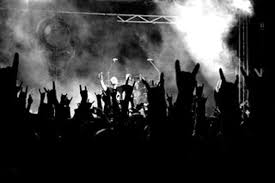

 |
The term “metal” is believed to have come from the hippie movement, when “heavy” meant deep or serious. Metal music revolves around a few key components: heavily distorted guitar riffs and chords, powerful drumming, extra low-range bass notes, and aggressive or throaty vocals. |
The rhythm in metal songs is emphatic, with deliberate stresses. Weinstein observes that the wide array of sonic effects available to metal drummers enables the "rhythmic pattern to take on a complexity within its elemental drive and insistency".[21] In many heavy metal songs, the main groove is characterized by short, two-note or three-note rhythmic figures—generally made up of 8th or 16th notes. These rhythmic figures are usually performed with a staccato attack created by using a palm-muted technique on the rhythm guitar. |